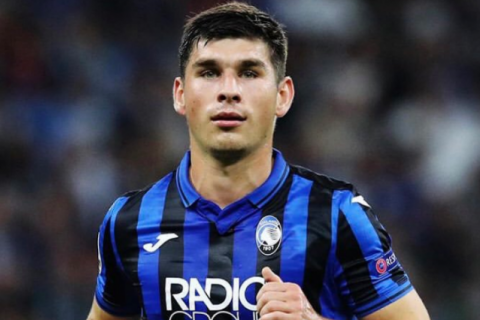

TOP
team
Follow
Home
About
Gallary
Contacts

Гол Малиновського не допоміг Аталанте обіграти Ювентус в фіналі Кубка Італії
Головне за добу
Північна Македонія оголосила заявку на Євро-2020
Тотовіцкій: Повернення Луческу і чемпіонство Динамо - головні події сезону
Малиновський - кращий гравець Аталанти в матчі з Ювентусом за версією Tuttoatalanta
Лапорта розглядає кандидатуру Райкарда як варіант заміни Куману